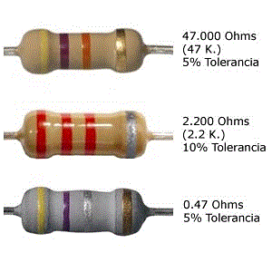
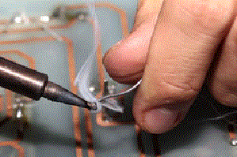
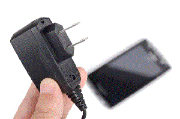
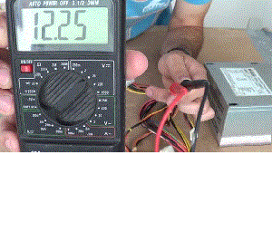

- Teoría atómica, electricidad. Materiales conductores y aisladores. Precauciones con la energía eléctrica.
- Concepto de campo eléctrico y magnético.
- Definiciones de tensión, corriente, resistencia y conductancia. Unidades y simbología.
- Circuito eléctrico. Circulación convencional y real de la corriente.
- Ley de Ohm, Kirchoff y Joules.
- Potencia eléctrica. Código de Colores.
|

|
|

|
- Resistores, serie y paralelo. Pilas y baterías eléctricas. Corriente alterna y contínua.
- Concepto de valor de pico, eficaz y R.M.S. Frecuencia y Ciclo de trabajo.
- Soldadura Sn-Pb. Circuitos impresos. Capacitores e inductores. Reactancia. Impedancia. Resonancia electromagnética. Inducción.
|
- Ley de Lentz. Generadores, transformadores y motores. Materiales semiconductores.
- Diodos y fotodiodos. Transistores. Semiconductores de cuatro capas.
- Efecto de campo. Efecto piezoeléctrico, fotoeléctrico y termoeléctrico.
|

|
|

|
- Optoelectrónica. El multímetro digital y analógico. El osciloscopio.
- Amplificación Electrónica. Circuitos integrados analógicos.
- Técnicas digitales. Circuitos integrados digitales. Automatismo y control.
- Normas de seguridad e higiene en el trabajo.
- Presupuestos.
|